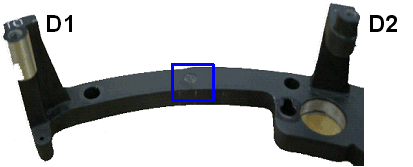

This procedure describes how to adjust the gap between the eject plate and the probe mounting brackets.
Perform this procedure when:
- The eject plate is replaced
- The eject plate seems to be striking one or more of the probe mounting brackets.
Refer to these diagrams and pictures while performing this procedure.
Table 46: Location of recessed identification mark between the D1 and D2 mounting brackets
|

|
-
Adjust the eject plate.
-
Determine the type of dispense plate.
-
With the air to the eject cylinder either disabled or disconnected, manually raise the eject plate upward as far as possible.
-
With the eject plate in the full upward position, verify that the gap between the eject plate and the left rear side of the D3 probe mounting bracket is within the specified range.
- If the dispense plate does not have an identification mark, then the correct range is 0.020–0.040 inches.
- If the dispense plate has a clear or black identification mark, then the correct range is 0.060–0.080 inches.
| If the gap is...
|
then...
|
| incorrect
|
Adjust the height of the eject plate:
- Remove the eject cylinder mounting bracket screw.
- Rotate the eject coupler up or down on the eject cylinder piston (up to decrease the gap, down to increase the gap).
- Attach the eject cylinder. Verify that the coupler does not inadvertently rotate after adjusting it up or down.
- Recheck the gap.
|
| correct
|
Proceed to the next step.
|
-
Enable the air to the eject cylinder.
-
Select
. Select
MixerArmEjector as the output name.
-
Select the
Toggle Output Value button multiple times to move the eject plate.
-
Verify that the gap is set correctly. If the gap is incorrect, then repeat the adjustment.
-
Verify proper operation of the eject plate and wash assembly.
-
Initialize the instrument.
-
From the
Device Diagnostics screen, select
Exerciser.
-
Run 50 replicates of
Reaction Route 2 with
Mixer enabled.
-
Select
Cycle Vessels.
-
Verify that the gripper-spinner eject rods do not rub on the bottom of the eject plate when the mixer belt is rotating the vessels.
Note: If a problem is encountered, contact Technical Support for assistance.
-
Verify system operation.
-
Perform system verification as stated in the Verification of Service Repair document .